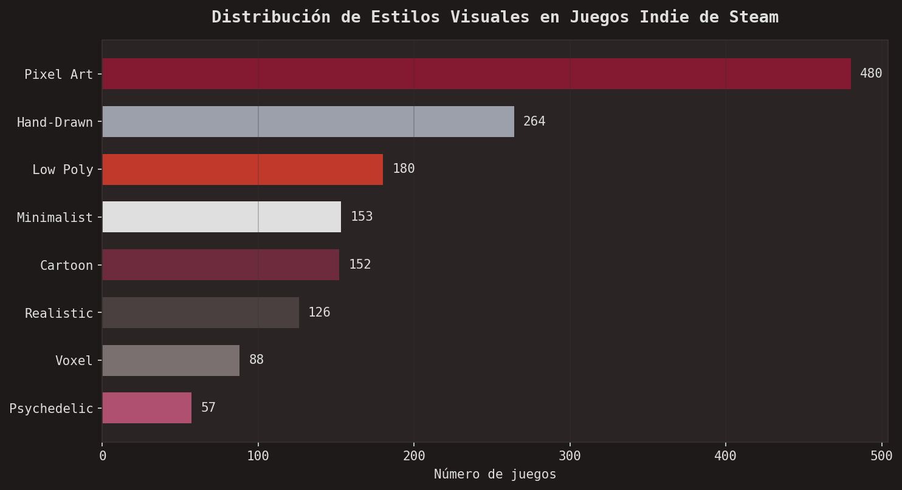
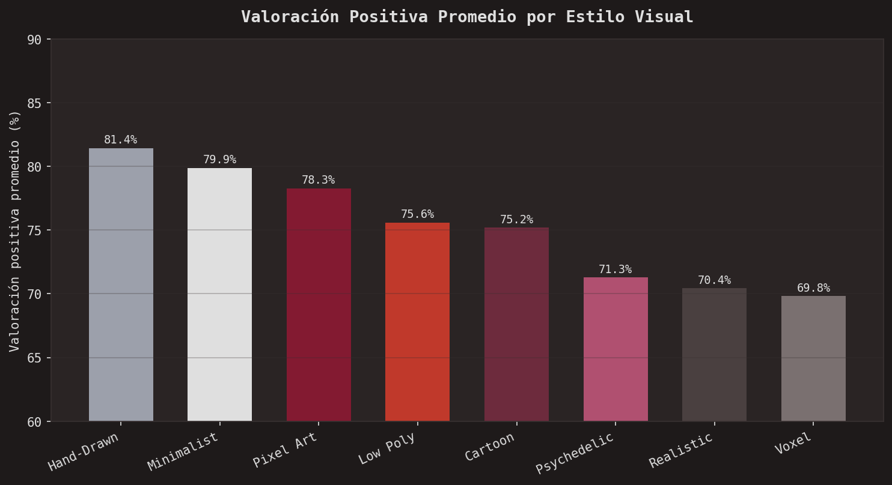
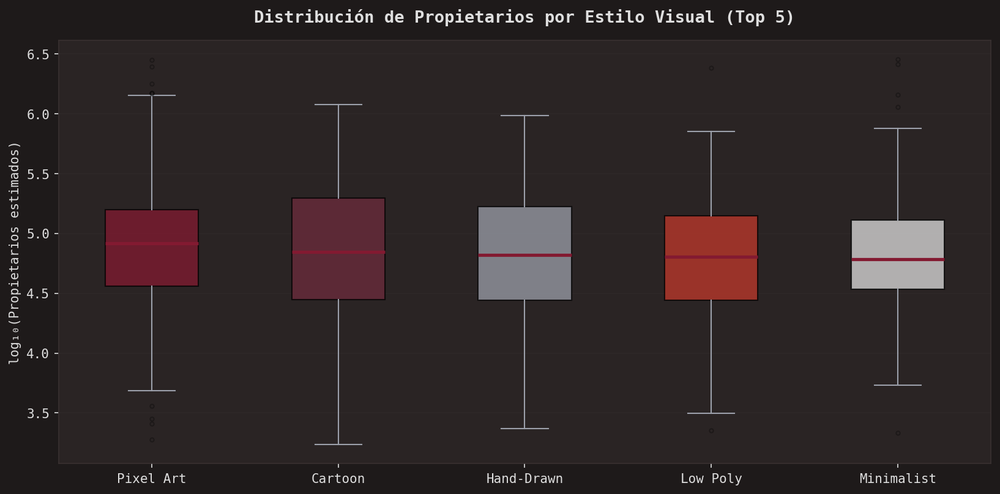
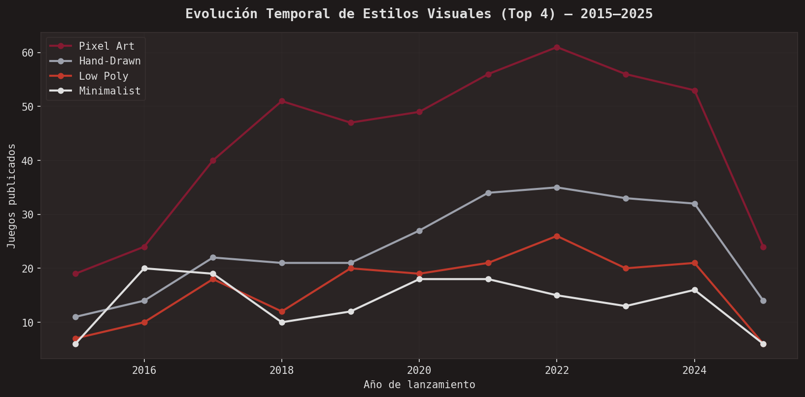
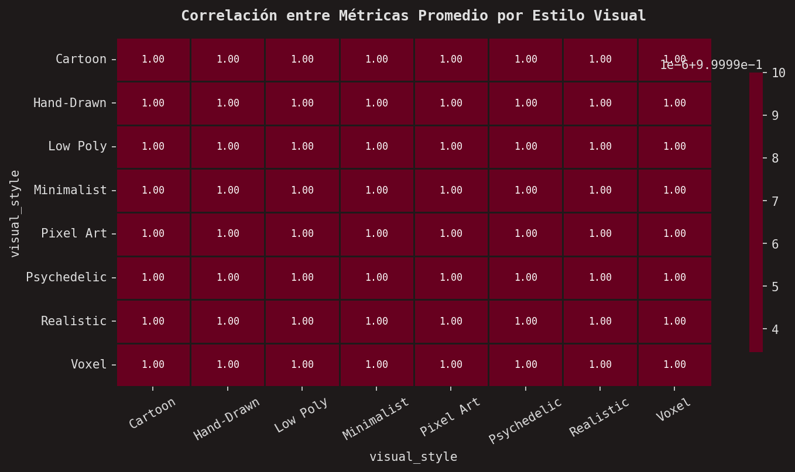
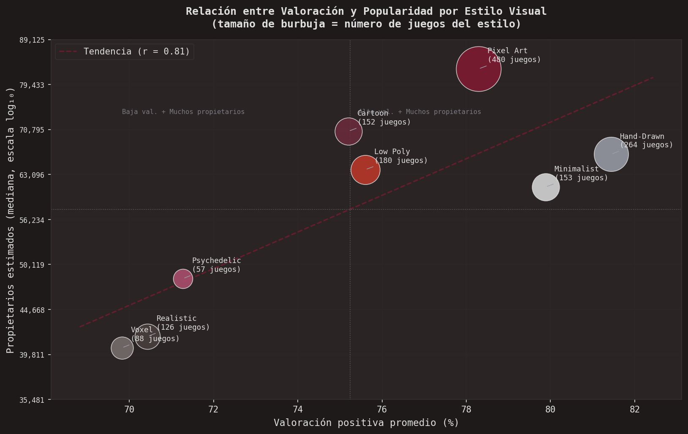
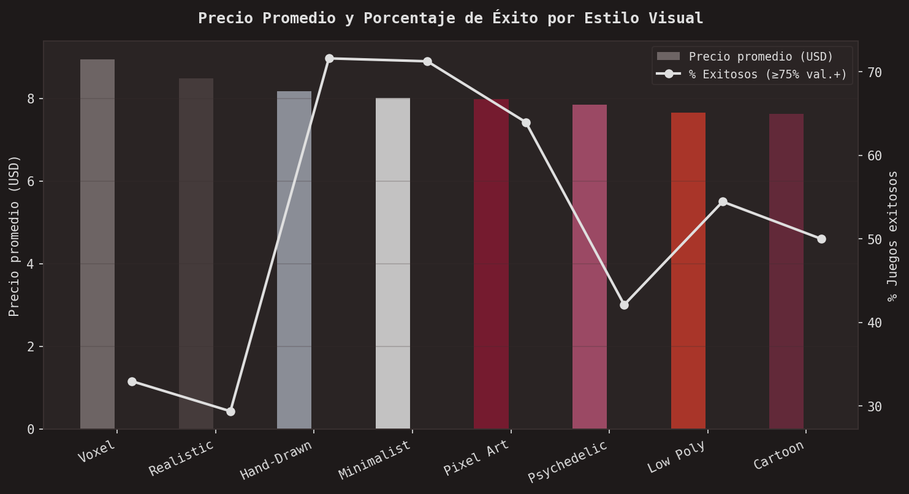

Juego Mejor Evaluado
El juego destacado se actualiza automáticamente cada vez que se modifica el dataset. El criterio de selección combina: valoración positiva ≥ 75%, propietarios estimados ≥ 20,000 y mayor puntuación compuesta (70% valoración + 30% log₁₀ de propietarios).
Pregunta de Investigación
El mercado indie en Steam supera los 50,000 títulos. El estilo visual es uno de los elementos más distintivos de cada juego indie, pero existe poca evidencia empírica sobre si impacta realmente su desempeño comercial.
Público objetivo del análisis: jóvenes de 12–25 años (mayor afinidad con Pixel Art y estilos experimentales) y adultos jóvenes de 25–37 años (preferencia por estilos pulidos como Minimalist y Low Poly). Fuentes de datos de 2016–2026.
Criterios de Éxito
Para este proyecto se definió un juego como "exitoso" cuando cumple simultáneamente los tres parámetros siguientes:
Un juego puede tener valoración alta pero pocos propietarios (nicho bien recibido) o muchos propietarios pero valoración media. La combinación de los tres criterios identifica títulos simultáneamente bien percibidos y ampliamente jugados.
Datos del Proyecto
Resumen estadístico por estilo visual — actualizado automáticamente desde data/steam_indie_dataset.csv
Resultados por Estilo Visual
La siguiente tabla detalla los resultados completos del análisis, incluyendo el porcentaje de juegos que cumplen los tres criterios de éxito definidos.
| Estilo Visual | # Juegos | Val.+ Media | Propiet. Mediana | % Exitosos | Ranking |
|---|---|---|---|---|---|
| Hand-Drawn MEJOR VALORADO | 264 | 81.4% | 66,450 | 66.3% | 🥇 |
| Minimalist | 153 | 79.9% | 61,102 | 61.4% | 🥈 |
| Pixel Art MÁS COMÚN | 480 | 78.3% | 82,672 | 58.5% | 🥉 |
| Low Poly | 180 | 75.6% | 63,876 | 51.7% | 4 |
| Cartoon | 152 | 75.2% | 70,473 | 51.3% | 5 |
| Psychedelic | 57 | 71.3% | 48,336 | 42.1% | 6 |
| Realistic | 126 | 70.4% | 41,698 | 38.9% | 7 |
| Voxel | 88 | 69.8% | 40,486 | 37.5% | 8 |
Visualizaciones
Gráficas generadas con matplotlib y seaborn en Google Colab. Cada figura incluye una explicación de su propósito y cómo leerla.







Hallazgos Principales
Pixel Art domina en volumen (~32%), pero su popularidad responde más a su tradición histórica y bajo costo de producción que a una ventaja cualitativa sobre otros estilos.
Hand-Drawn y Minimalist son los estilos mejor valorados (81.4% y 79.9%), superando al Pixel Art (78.3%) a pesar de tener menor presencia en la plataforma.
La correlación entre estilo visual y popularidad comercial es débil (r ≈ 0.009 individual, r ≈ 0.18 por promedios de estilo). Tener mejor valoración no implica mayor número de propietarios.
Los estilos realistas (Realistic, Voxel) reciben peores valoraciones (~70%), posiblemente porque generan expectativas técnicas más altas en el jugador.
El precio no determina el éxito: no se encontró correlación relevante entre rango de precio y porcentaje de juegos exitosos en ningún estilo visual.
El estilo visual sí incide en la percepción de calidad de un juego indie, pero no determina por sí solo la popularidad comercial, que depende de factores adicionales como marketing, comunidad del desarrollador y timing de lanzamiento.
Recursos del Proyecto
Todos los archivos del proyecto están disponibles públicamente:
Actualiza los enlaces entre corchetes con tus URLs reales antes de publicar.